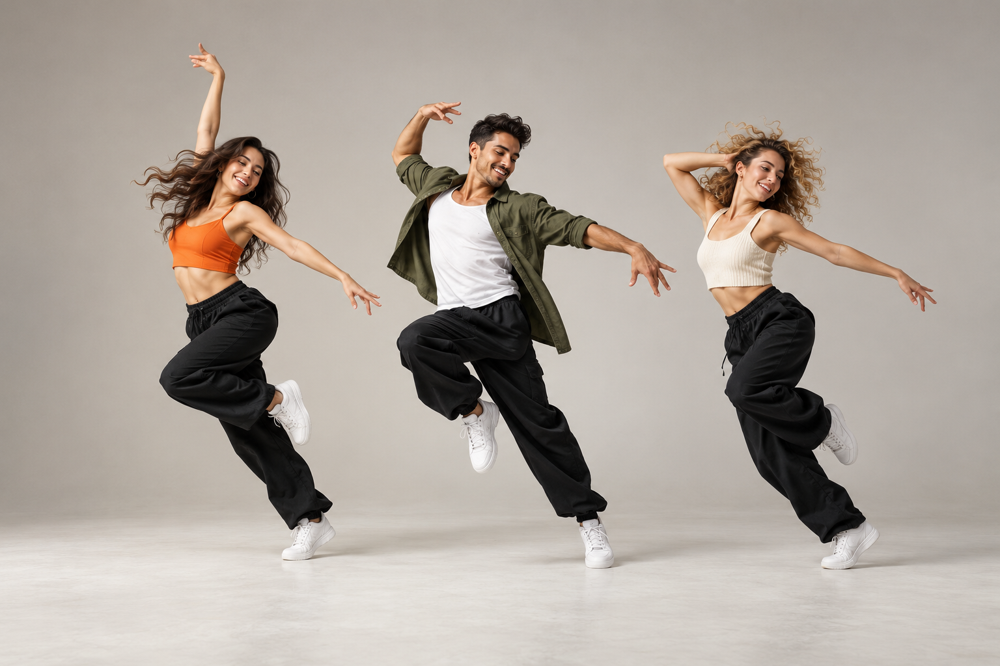
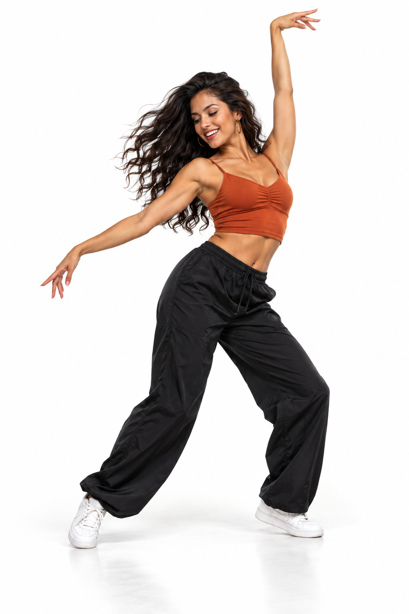

В удовольствие
Выбирай движение и музыку, которые нравятся именно тебе.


ДОБРО ПОЖАЛОВАТЬ В MAN’GO
Оставь дела за дверью. Включай музыку, знакомься с людьми и открывай себя в движении.
MAN’GO DANCE — школа танцев в Строгино. Здесь есть парные и сольные направления, занятия для взрослых и маленьких танцоров.
Выбирай движение и музыку, которые нравятся именно тебе.
Уточни уровень группы — и начни с подходящего занятия.
Пробуй парные танцы и находи общий язык через движение.
Добавь в свою неделю время для музыки и новых впечатлений.
В паре и солоВЫБИРАЙ СВОЙ ФОРМАТ
Взрослым и детямТАНЦЫ ДЛЯ СЕМЬИ
Утром и вечеромНАЙДИ УДОБНОЕ ВРЕМЯ
В СтрогиноРЯДОМ С ТОБОЙ
НАЙДИ ТО, ЧТО ОТКЛИКАЕТСЯ
Плавно или энергично, в паре или соло — попробуй свой ритм.
А ещё: Dance Fit · Salsation · Здоровая спина · Творческая группа
МАЛЕНЬКИЕ ШАГИ — БОЛЬШИЕ ОТКРЫТИЯ
Занятия для детей 3–5 лет: танцевальные движения, осанка и растяжка в игровой форме.
ВСТРЕЧАЕМСЯ НА ТАНЦПОЛЕ
Выбирай день и знакомься с направлениями.
Расписание перенесено из материалов студии и требует подтверждения. Утренние и детские группы уточняйте у администратора.
ЛЮДИ MAN’GO
Диана К.Бачата · Salsation · Dance Fit
ОсвелСальса в паре · Кизомба
НастяАфро реггетон
Направления указаны по афишам. Состав преподавателей уточняйте в студии.ПЕРВЫЙ ШАГ — ТВОЙ
Поможем выбрать направление и подходящую группу.
Условия и стоимость расскажет администратор.
Откроется чат студии. Сообщение отправляете вы.
ЖДЁМ ТЕБЯ В СТРОГИНО
Москва, ул. Маршала Катукова, 22к2
5 этаж · метро Строгино
Позвонить и подобрать занятие
В студии также есть английский и испанский для детей и взрослых. Подробности — у администратора.